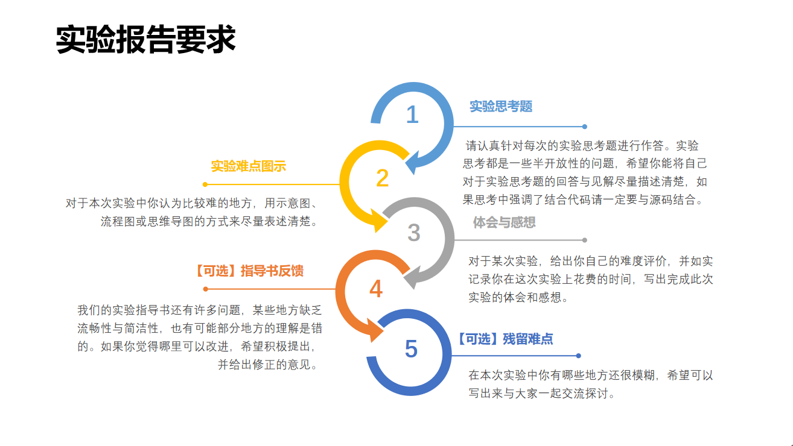
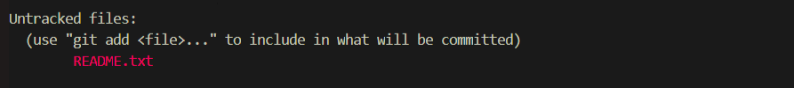
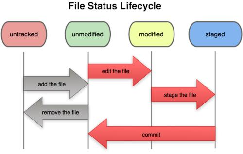
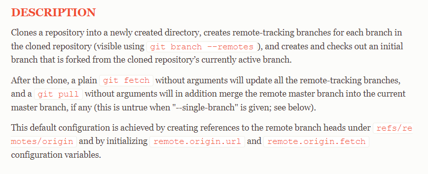
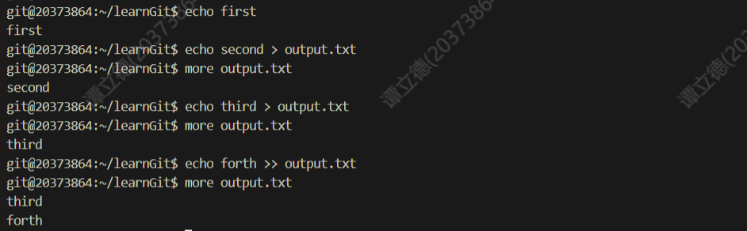
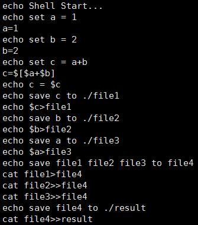
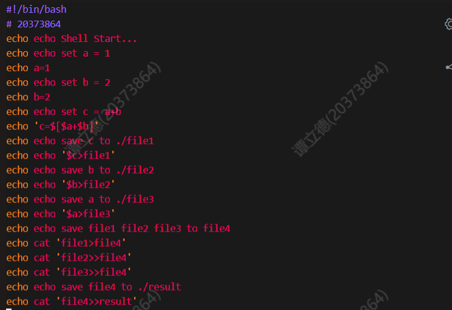
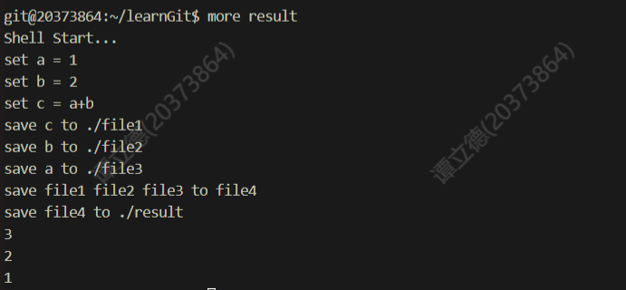

OS - Lab0
初识操作系统
写在前面：由于操作系统需要撰写实验报告，要求如下图：

因此，之后 OS 的每一次 Blog 的前半部分（课前）基本为我的实验报告，后半部分则会分享每一次上机的经验以及其他的一些碎碎念(～￣▽￣)～
课下
Lab0 实验报告
一. 思考题
Thinking 0.1
在
/home/20xxxxxx/learnGit目录下创建一个名为README.txt的文件。这时使用git status > Untracked.txt。在
README.txt文件中随便写点什么，然后使用刚刚学到的add命令，再使用git status > Stage.txt。之后使用上面学到的
Git提交有关的知识把README.txt提交，并在提交说明里写入自己的学号。使用
cat Untracked.txt和cat Stage.txt，对比一下两次的结果，体会一下README.txt两次所处位置的不同。修改
README.txt文件，再使用git status > Modified.txt。使用
cat Modified.txt，观察它和第一次add之前的status一样吗，思考一下为什么？
答：
- 第一次
add时的status如图：
 - 使用
cat Modified.txt后的status如图：
- 思考：不一样，第一次
add之前文件还未加入暂存区和版本库，从而显示状态为Untracked，而此时README.txt文件已经被加入版本库中，此时再更改工作区中的README.txt文件会导致其与版本库中当前版本内容不一致，从而显示状态为modified,即 ‘已修改’ 的意思
Thinking 0.2

- 仔细看看这张图，思考一下箭头中的
add the file、stage the file和commit分别对应的是Git里的哪些命令呢？
答：
add the file对应git add指令stage th file同样对应git add指令commit对应git commit指令
Thinking 0.3
深夜，小明在做操作系统实验。困意一阵阵袭来，小明睡倒在了键盘上。等到小明早上醒来的时候，他惊恐地发现，他把一个重要的代码文件
printf.c删除掉了。苦恼的小明向你求助，你该怎样帮他把代码文件恢复呢？正在小明苦恼的时候，小红主动请缨帮小明解决问题。小红很爽快地在键盘上敲下了
git rm printf.c，这下事情更复杂了，现在你又该如何处理才能弥补小红的过错呢？处理完代码文件，你正打算去找小明说他的文件已经恢复了，但突然发现小明的仓库里有一个叫
Tucao.txt，你好奇地打开一看，发现是吐槽操作系统实验的，且该文件已经被添加到暂存区了，面对这样的情况，你该如何设置才能使Tucao.txt在不从工作区删除的情况下不会被git commit指令提交到版本库？
答：
执行
git checkout -- printf.c指令，先执行
git reset HEAD printf.c指令，然后执行git checkout -- printf.c指令执行
git rm --cached Tucao.txt指令
Thinking 0.4
找到我们在
/home/20xxxxxx/learnGit下刚刚创建的README.txt，没有的话就新建一个。在文件里加入
Testing 1，add，commit，提交说明写 1。模仿上述做法，把
1分别改为2和3，再提交两次。使用
git log命令查看一下提交日志，看是否已经有三次提交了？记下提交说明为3的哈希值。开动时光机！使用
git reset --hard HEAD^，现在再使用git log，看看什么没了？找到提交说明为
1的哈希值，使用git reset --hard <Hash-code>，再使用git log，看看什么没了？现在我们已经回到过去了，为了再次回到未来，使用
git reset --hard <Hash-code>，再使用git log，我胡汉三又回来了！这一部分在课后的思考题中简单写一写你的理解即可，毕竟能够进行版本的恢复是使用
git很重要的一个原因。
答：
我的理解：
git reset指令能让我们能能移动HEAD回退到任意的版本，并在缺省的情况下更新暂存区和版本库的当前版本，但在参数为--hard的情况下会同时覆盖掉工作目录下的文件，相当于把原本的工作目录使用回退版本库中的内容全部覆盖掉；所以若工作目录下的文件还未提交，则Git仍会覆盖它从而导致无法恢复，有风险，要慎用。附：详细的说明可以参考
Git的官网上的 重置揭秘，里面描述了git reset类指令的具体工作原理
Thinking 0.5
- 思考下面四个描述，你觉得哪些正确，哪些错误，请给出你参考的资料或实验证据。
克隆时所有分支均被克隆，但只有
HEAD指向的分支被检出。克隆出的工作区中执行
git log、git status、git checkout、git commit等操作不会去访问远程版本库。克隆时只有远程版本库
HEAD指向的分支被克隆。克隆后工作区的默认分支处于
master分支。
答：
正确
依据：
Git官网对git clone描述
可见是 “creates remote-tracking branches for each branch in the cloned repository”
正确
依据：见第一小问
可见只有
git pull和git fetch操作能使远程主分支改变
错误，所有分支均被克隆
依据：见第一小问
可见是 “creates remote-tracking branches for each branch in the cloned repository”
错误
依据：见第一小问
可见是 “creates and checks out an initial branch that is forked from the cloned repository’s currently active branch“
Thinking 0.6
执行如下命令,并查看结果
echo first
echo second > output.txt
echo third > output.txt
echo forth >> output.txts
答：
- 执行结果如图：

Thinking 0.7
使用你知道的方法（包括重定向）创建下图内容的文件（文件命名为
test），将创建该文件的命令序列保存在command文件中，并将test文件作为批处理文件运行，将运行结果输出至result文件中。给出command文件和result文件的内容，并对最后的结果进行解释说明（可以从test文件的内容入手）。
具体实现的过程中思考下列问题:
echo echo Shell Start与echo `echo Shell Start`效果是否有区别;echo echo \$c>file1与echo `echo \$c>file1`效果是否有区别.
答：
操作代码：
command文件内容
result文件内容

问题思考：
效果有区别
原因：在命令行指令中含有 反引号 包裹的指令时，会 先执行 反引号包裹中的指令，并使得被括起来的内容 替换 为 bash 执行 该指令的 标准输出（stdout）
二. 实验难点：
命令行工具
awk，sed等的使用git的理解与运用工具
Makefile，Shell脚本，gcc等工具的熟悉与使用…
Tips: 谨记，一定要勤使用 git pull ，这条指令很重要！随时同步一下！
三. 体会与感想：
难度评价：3/10
实验用时：5h， 撰写实验报告用时：3h
体会与感想：
命令行操作是一种崭新的操作方式，很多工具如
vim，gcc等参数和使用等操作都需要我的进一步的钻研本次实验很好的带领我们进入OS的大门，让我们初步熟悉OS课程平台和系统的使用，为接下来真正的OS课程打下了牢固的基础
课上
Lab0 的课上考察较为简单，分为 Basic 和 Extra 两套题目，内容为简单 Makefile 的使用， Shell 脚本的书写（ if 和 while 语句）， grep 和 awk 命令（含参数）的使用， pwd 指令。（总用时大约在 1h 左右，但提交时评测机卡的怀疑人生，直接卡了一个多小时，上机体验极差……
by Tan